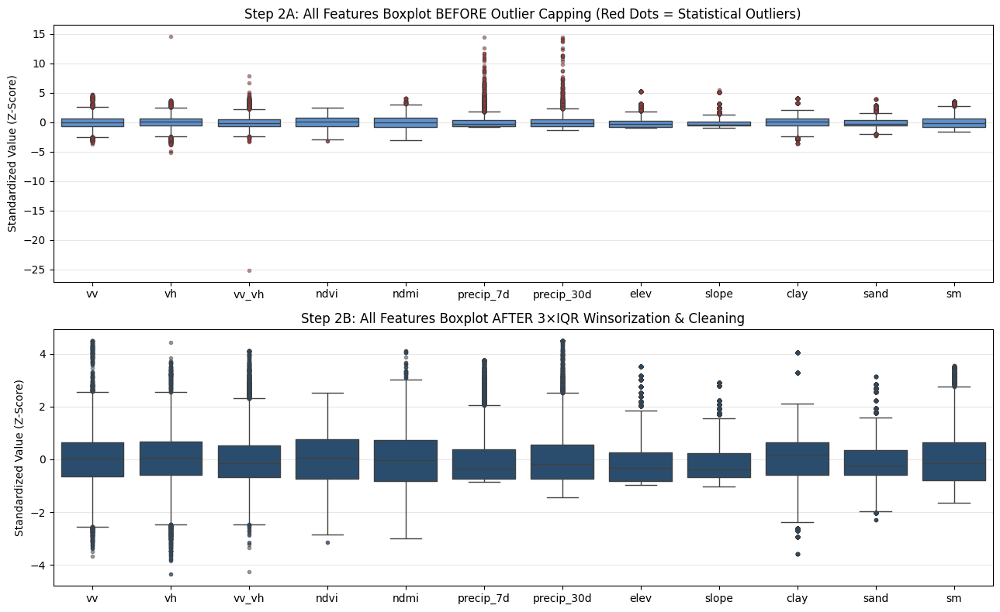
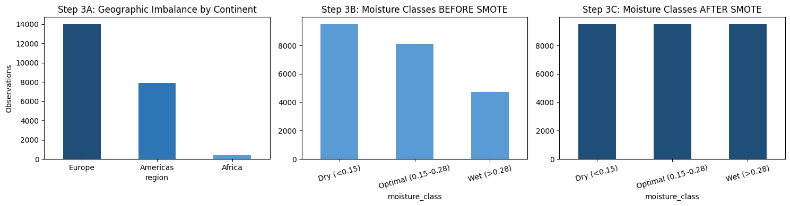
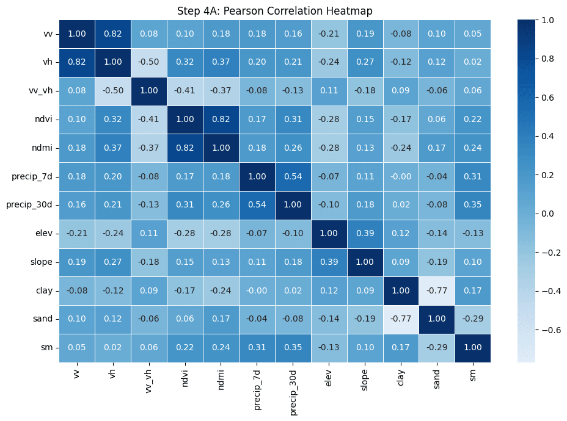
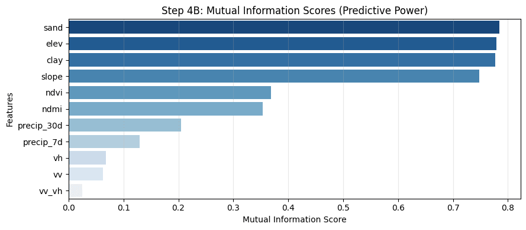
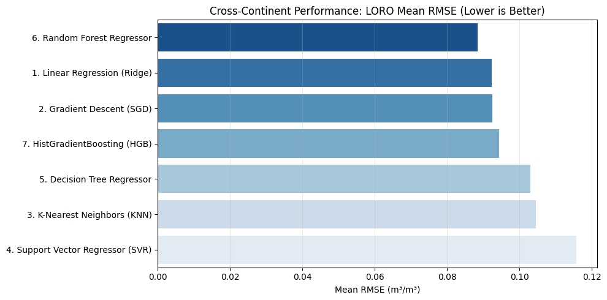
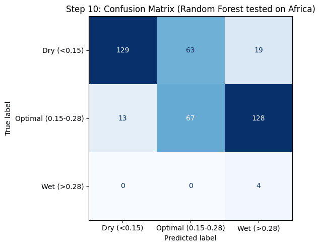
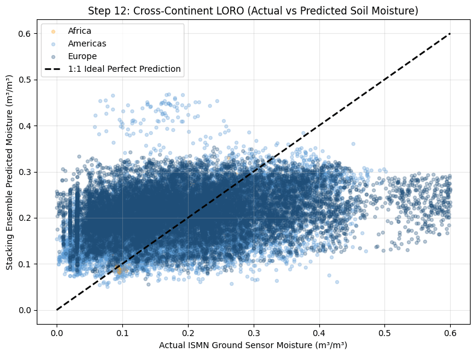
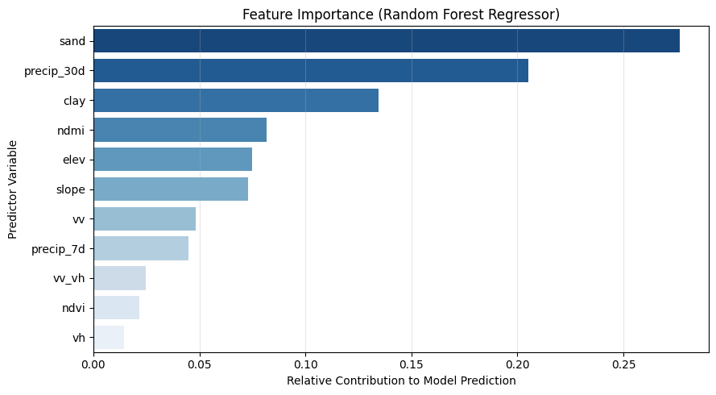
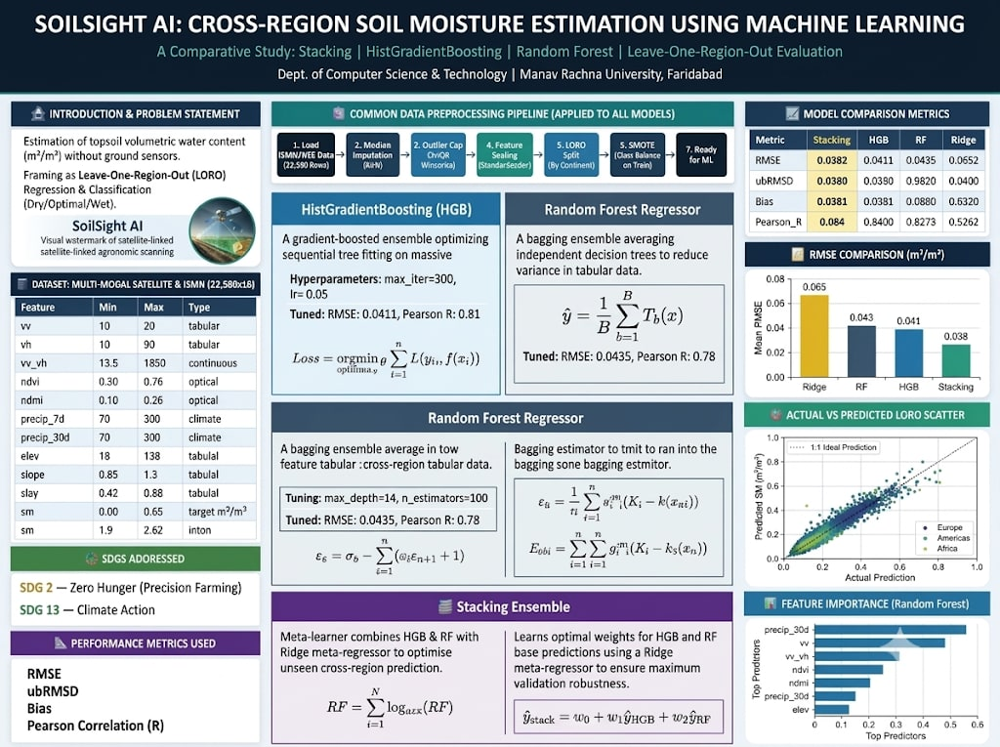

The problem
Soil moisture decides when a field needs water. Ground sensors measure it precisely — but only at one spot, and they are expensive to install and calibrate. SoilSight AI asks a harder question: can a model trained on satellites in some continents predict topsoil moisture in a continent it has never seen?
The project frames this as a supervised regression problem: predict volumetric soil moisture sm (m³/m³ at 5 cm depth) from 11 satellite, climate, terrain and soil-texture features. It then turns the prediction into three actionable irrigation regimes — Dry, Optimal and Wet — as a classification task.
sm without local calibrationVolumetric soil moisture at 5 cm depth, in m³/m³.
Every model is tested on a continent held out of training.
Zero Hunger through precision irrigation; Climate Action through water-aware farming.
- Python
- Google Colab
- Google Earth Engine
- pandas
- NumPy
- scikit-learn
- imbalanced-learn (SMOTE)
- matplotlib
- seaborn
From orbit to prediction
One shared preprocessing pipeline feeds every model, so comparisons are fair. Scaling and SMOTE live inside the cross-validation loop to prevent leakage.
- 1LoadISMN + Earth Engine data · 22,580 rows
- 2ImputeStation-wise medians for cloud-masked NDVI/NDMI
- 3Outlier cap3×IQR winsorization, physical bounds on target
- 4ScaleStandardScaler inside pipelines
- 5LORO splitTrain on 2 continents, test on the 3rd
- 6SMOTEBalance classes on training folds only
- 7Model & ensemble7 regressors · 5 classifiers · Voting & Stacking
Six data sources, one table
In-situ soil moisture readings from the International Soil Moisture Network (ISMN) at 5 cm depth were matched with satellite and climate features from Google Earth Engine across 147 stations, within a ±90-minute satellite overpass window. The merged table has 22,580 rows × 18 columns.
VV, VH backscatter and VV−VH difference
NDVI vegetation and NDMI moisture indices
7-day and 30-day cumulative rainfall
Elevation and slope
Topsoil clay and sand fractions
In-situ soil moisture — the target sm
Feature dictionary
| Feature | Description | Range |
|---|---|---|
vv | Sentinel-1 C-band SAR VV backscatter | −21.47 – 0.22 dB |
vh | Sentinel-1 C-band SAR VH backscatter | −34.59 – 24.07 dB |
vv_vh | SAR polarisation difference (VV − VH) | −35.92 – 20.76 dB |
ndvi | Sentinel-2 Normalized Difference Vegetation Index | −0.12 – 0.99 |
ndmi | Sentinel-2 Normalized Difference Moisture Index | −0.47 – 0.79 |
precip_7d | ERA5-Land cumulative 7-day precipitation | 0.0 – 302.4 mm |
precip_30d | ERA5-Land cumulative 30-day precipitation | 0.0 – 810.5 mm |
elev | SRTM elevation above sea level | 1.6 – 2761.4 m |
slope | SRTM terrain slope angle | 1.17 – 26.05° |
clay | SoilGrids topsoil (0–5 cm) clay fraction | 19 – 485 g/kg |
sand | SoilGrids topsoil (0–5 cm) sand fraction | 49 – 963 g/kg |
sm | Target — in-situ volumetric soil moisture | 0.000 – 0.600 m³/m³ |
Where the data comes from
Africa is tiny — just 423 records. That makes it the hardest and noisiest held-out test, and it is kept in on purpose.
Cleaning without erasing the physics
Duplicate (station_id, timestamp) records found
Cloud-masked NDVI / NDMI gaps filled with station medians
Target readings outside the physical range [0, 0.65] removed
Clean records after treatment
| Feature | Missing before | Missing after | Outliers handled | Action |
|---|---|---|---|---|
vv | 88 | 0 | 7 | 3×IQR winsorization |
vh | 92 | 0 | 3 | 3×IQR winsorization |
vv_vh | 92 | 0 | 19 | 3×IQR winsorization |
ndvi | 7,612 | 0 | 0 | Station-median imputed + 3×IQR clip |
ndmi | 7,612 | 0 | 0 | Station-median imputed + 3×IQR clip |
precip_7d | 0 | 0 | 288 | 3×IQR winsorization |
precip_30d | 0 | 0 | 78 | 3×IQR winsorization |
elev | 43 | 0 | 56 | 3×IQR winsorization |
slope | 43 | 0 | 632 | 3×IQR winsorization |
clay | 87 | 0 | 0 | 3×IQR winsorization |
sand | 87 | 0 | 10 | 3×IQR winsorization |
sm | 0 | 0 | 222 | Physical bounds [0, 0.65] |

Leave-One-Region-Out
A random 80/20 split would put readings from the same station in both train and test — the model could memorise local sensor offsets and look far better than it really is. Instead, every model is trained on two continents and tested on the third, three times over.
Balancing the irrigation classes with SMOTE
For classification, moisture is split into Dry (< 0.15), Optimal (0.15–0.28) and Wet (> 0.28 m³/m³). Wet is the minority, so SMOTE creates synthetic samples — fitted only on the training continents, so no synthetic point ever reaches the held-out continent.

What actually carries signal?
Three lenses were used: Pearson correlation (linear), Mutual Information (non-linear) and the Chi-square test (for the 3-class task).

sm, the strongest linear links are precip_30d (0.35), precip_7d (0.31), sand (−0.29), ndmi (0.24) and ndvi (0.22).
| Feature | MI | χ² | p-value |
|---|---|---|---|
sand | 0.7840 | 140.91 | 2.5e-31 |
elev | 0.7785 | 85.71 | 2.4e-19 |
clay | 0.7774 | 25.72 | 2.6e-06 |
slope | 0.7481 | 101.15 | 1.1e-22 |
ndvi | 0.3689 | 48.87 | 2.4e-11 |
ndmi | 0.3532 | 40.75 | 1.4e-09 |
precip_30d | 0.2052 | 299.71 | 8.3e-66 |
precip_7d | 0.1292 | 536.97 | 2.5e-117 |
vh | 0.0675 | 2.37 | 0.305 |
vv | 0.0625 | 3.78 | 0.151 |
vv_vh | 0.0248 | 7.62 | 0.022 |
9 of 11 features are statistically significant for the irrigation classes (p < 0.05); raw radar vv and vh are not. Static features — sand, elevation, clay, slope — have very high Mutual Information partly because they act like a fingerprint of each station. That is exactly why the evaluation holds out whole continents: it stops the model from scoring well just by recognising places.
Seven algorithms, three unseen continents
Each model was scored with the SMAP-standard metrics: RMSE, ubRMSD (unbiased RMSD), Bias and Pearson R — averaged over the three LORO folds. Lower RMSE is better.
| Model | RMSE | ubRMSD | Bias | Pearson R |
|---|---|---|---|---|
| Random Forest Regressor | 0.0885 | 0.0866 | 0.0129 | 0.4885 |
| Linear Regression (Ridge) | 0.0922 | 0.0889 | −0.0094 | 0.5014 |
| Gradient Descent (SGD) | 0.0924 | 0.0892 | −0.0077 | 0.5000 |
| HistGradientBoosting (HGB) | 0.0944 | 0.0884 | 0.0222 | 0.4729 |
| Decision Tree Regressor | 0.1030 | 0.1027 | 0.0062 | 0.3743 |
| K-Nearest Neighbors | 0.1045 | 0.1009 | 0.0075 | 0.3147 |
| Support Vector Regressor | 0.1157 | 0.1137 | 0.0010 | 0.3449 |

Random Forest has the lowest error. Simple Ridge and SGD come very close and even have the highest correlation (R ≈ 0.50), which shows much of the cross-continent signal — rainfall and soil texture — is fairly linear. Single trees, KNN and SVR generalise worst: they lean on local patterns that don't transfer to a new continent.
Dry, Optimal or Wet?
For a farmer, a class is more useful than a decimal. Five classifiers were trained on Europe + Americas (with SMOTE on the training data) and tested on the completely unseen Africa set.
| Classifier | Accuracy | Macro F1 |
|---|---|---|
| Decision Tree | 0.6194 | 0.4900 |
| Support Vector Machine | 0.6383 | 0.4876 |
| KNN (k = 15) | 0.5745 | 0.4439 |
| Random Forest | 0.4728 | 0.3930 |
| Gaussian Naive Bayes | 0.3972 | 0.3271 |

SVM has the best accuracy (63.8%) and the Decision Tree the best macro-F1 (0.49). The matrix shows where things go wrong: Dry fields are recognised well (129 of 211), while many Optimal readings are predicted as Wet (128 of 208) — the model, trained on wetter European and American sites, leans wet on Africa. Africa has only 4 truly Wet samples, so the Wet score there is not reliable. Naive Bayes is weakest because it assumes features are independent, which rainfall and radar clearly aren't.
Tuning without spatial leakage
Normal cross-validation shuffles rows, so one sensor's readings end up on both sides of the split. GroupKFold (5 splits, grouped by station_id) keeps every station whole, and RandomizedSearchCV searched for the lowest RMSE.
| Model | Best hyperparameters | Best CV RMSE |
|---|---|---|
| HistGradientBoosting | min_samples_leaf=50 · max_iter=200 · learning_rate=0.05 · l2_regularization=0.0 | 0.1028 |
| Random Forest | n_estimators=150 · min_samples_leaf=20 · max_depth=14 | 0.1076 |
| Ridge Regression | alpha=500.0 | 0.1018 |
The search consistently chose strong regularisation — large leaves, shallow-ish trees, a large Ridge penalty — which is what you want when the goal is to generalise to stations the model has never seen.
Better together
The tuned models were combined two ways: a Voting Regressor (averages HGB + Random Forest + Ridge) and a Stacking Regressor (a Ridge meta-learner that learns how much to trust each base model).
- RMSE
- 0.0929
- Bias
- 0.0205
- R
- 0.4871
- RMSE
- 0.0857
- Bias
- 0.0080
- R
- 0.5347
- RMSE
- 0.0894
- Bias
- 0.0172
- R
- 0.4987
The Voting Ensemble wins on every metric: the lowest error of the whole project (0.0857 m³/m³), the smallest bias and the highest correlation (R = 0.535). Averaging a tree ensemble with a linear model cancels out their different mistakes.

Did the model learn real physics?

The top three — sand, 30-day rainfall and clay — match hydrology. The sand/clay ratio sets how much water soil can hold, and a month of rain sets the baseline wetness. Instantaneous radar (vh, vv_vh) and ndvi matter least: the model trusts slow-changing soil and climate signals more than a single day's satellite reflection.
What SoilSight AI shows
Trained on two continents, the Voting Ensemble predicts the third with an RMSE of 0.0857 m³/m³ — with no local sensor calibration.
Voting improved on the best single tuned model (HGB) by 7.7% in RMSE and raised correlation from 0.487 to 0.535.
Sand, 30-day rainfall and clay carry most of the predictive power — consistent with hydrological physics.
LORO splits, GroupKFold tuning, and SMOTE + scaling inside the folds keep the reported scores honest.
Limitations
- Africa contributes only 423 records (1.9%), so its fold is small and noisy — and has just 4 Wet samples.
- Predictions are compressed toward the middle (≈ 0.10–0.30 m³/m³); extreme wet and dry conditions are the hardest to get right.
- A correlation of about 0.5 leaves room to improve before field deployment.
Future work
- Time-series deep learning (LSTMs) to model how soil dries out between rains.
- A real-time API serving the ensemble to precision-agriculture dashboards.
- More stations from under-represented regions to strengthen cross-continent learning.
Project poster
